+
WELCOME TO INDONESIAN'S NATURE
Find Your Favorite Destination
 Hot
Hotselling
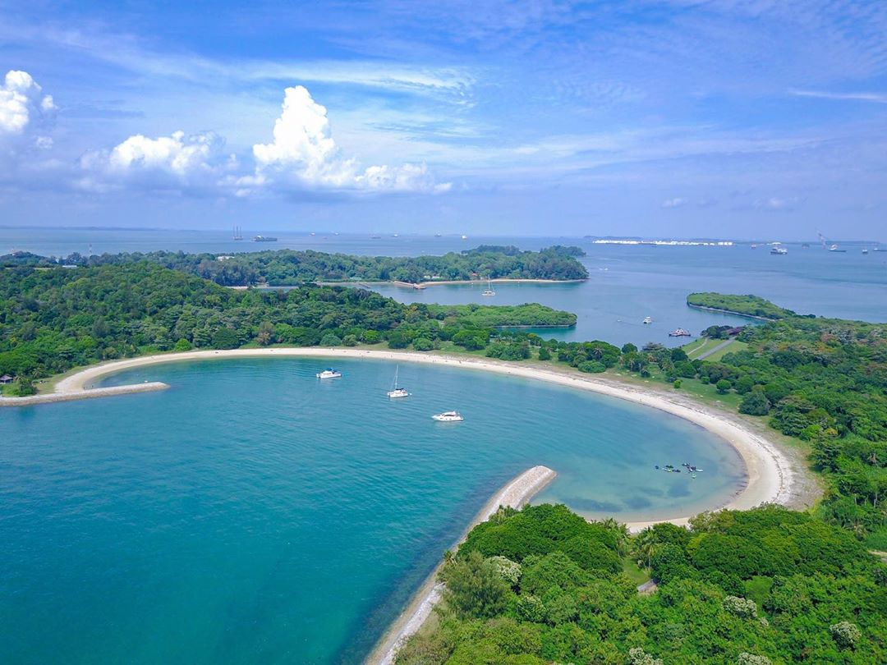
Lazarus Island
Southern Island, Singapore
Lazarus Island
Tempatnya yang bersih dengan udara yang sejuk menjadikan pesona dari Lazarus Island memiliki daya pikat tersendiri. Tak hanya itu saja, biota alamnya yang masih terjaga juga bisa dinikmati secara di sini. Bahkan, pengunjung bisa menyentuh penghuni lautnya dengan begitu akan menikmati indahnya pulau ini!
Location: Southern Island, Singapore
Back
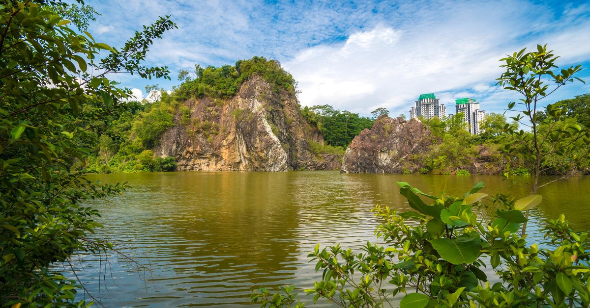
Batook Town Park
Bukit Batok East Ave 5, Singapore
Batook Town Park
Tidak jauh dari bukit batok nature park, ada juga bukit batok town park. Lokasi tepatnya ada di daerah Guilin. Keunikan dari bukit ini adalah batuan granit yang sangat menarik untuk menjadi tempat menikmati keindahan serta mengambil beberapa foto menarik.
Location : Bukit Batok East Ave 5, Singapura 650242
Back
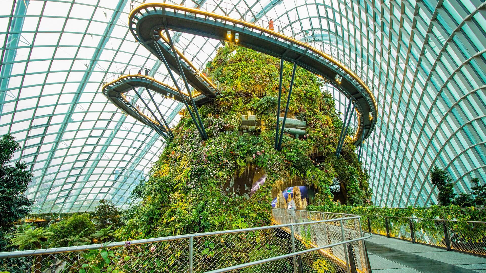
Cloud Forest
18 Marina Gardens Dr, Singapore
Cloud Forest
Cloud Forest ini adalah sebuah Cloud Mountain yang berada di tengah-tengah Cloud Forest Dome, sebuah replika gunung setinggi 35 meter yang diselimuti tumbuh-tumbuhan hijau yang rimbun, menyerupai hutan tropis lengkap dengan air terjun buatannnya. Sebanyak 2,577 panel kaca dari 690 bentuk dan ukuran yang berbeda diperlukan untuk kubah yang menutupi seluruh area permukaan tempat ini.Anda akan dibuat takjub di sini, karena akan disuguhkan pemandangan pegunungan yang di kelilingi berbagai tanaman.
Location: 18 Marina Gardens Dr, Singapore 018953
Back
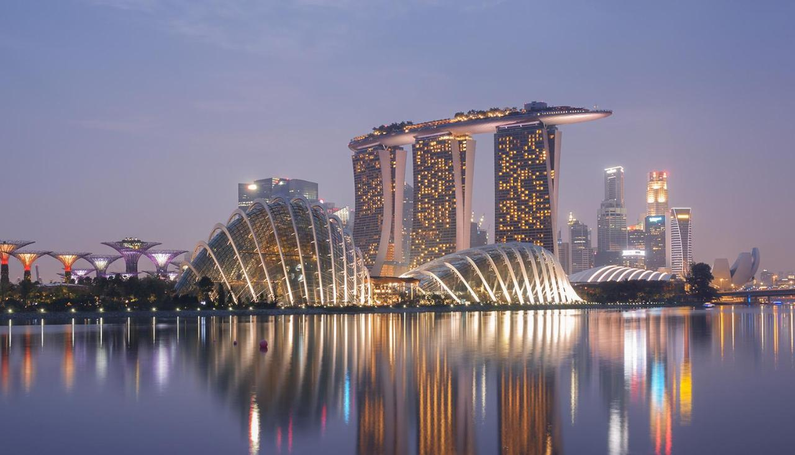
Marina Bay
Teluk Mariana, Singapore
Marina Bay
Teluk Marina atau Marina Bay ialah sebuah teluk dekat Central Area di daerah selatan Singapura dan berada di sebelah timur dari Downtown Core. Marina Bay adalah area kelas atas yang dipadati gedung pencakar langit, hotel elite, dan mal mewah. Area ini terkenal dengan Bianglala Singapore Flyer yang amat tinggi serta konservatori bunga dan Supertrees warna-warni di Gardens by the Bay. Pertunjukan dan pameran kesenian inovatif digelar di Esplanade Theatre yang futuristik. Di kawasan ini terdapat beragam pilihan tempat makan, mulai dari pusat kuliner simpel hingga restoran mewah.
Location : Teluk Mariana, Singapore
Back
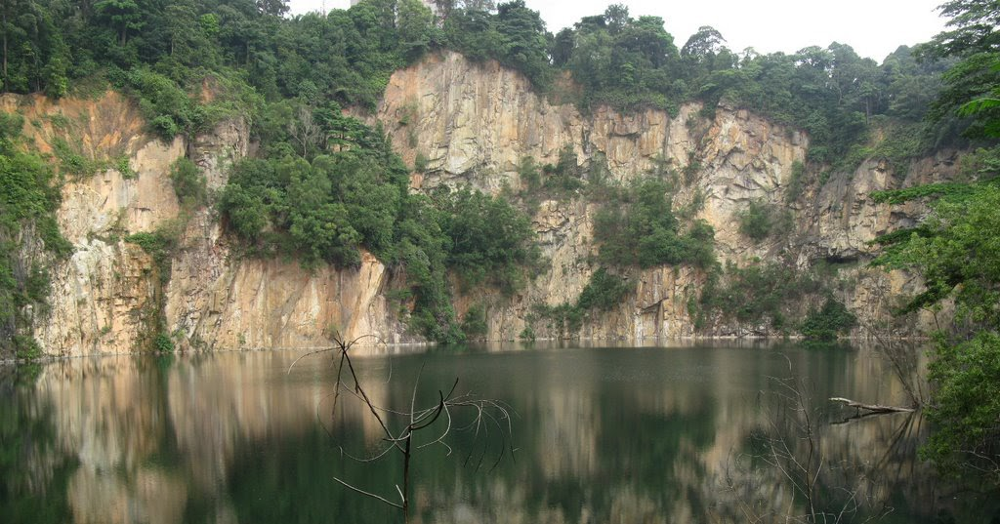
Bukit Timah
Bukit Timah Hill, Singapore
Bukit Timah
ini adalah gunung tertinggi di Singapura dan berdiri di ketinggian 163, 63 meter. Sebuah aroma yang indah akan menyambut Anda saat Anda naik ke atas bukit, sehingga membuat perjalanan Anda tak terlupakan. Anda bisa menemukan lebih dari 840 spesies bunga dan tanaman serta lebih dari 500 spesies hewan. Bukit Timah Hill harus ada dalam daftar anda jika Anda benar-benar ingin mengunjungi ketinggian pegunungan Singapura. Yang terbaik adalah Anda bisa beristirahat di paviliun kecil yang terletak di puncak Bukit Timah sehingga Anda tidak akan merasa lelah sepanjang hari.
Location: Bukit Timah Hill, Singapore
Back
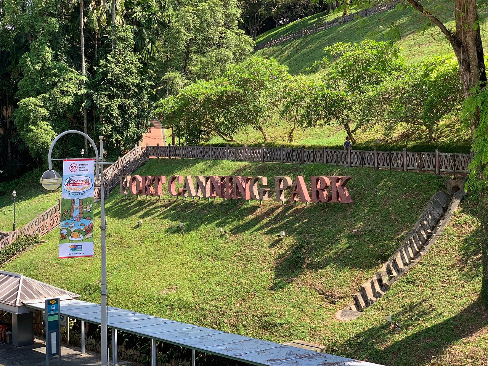
Fort Canning
River Valley Rd, Singpore
Fort Canning
Ketika Anda membutuhkan istirahat sejenak dari tempat-tempat turis, pergilah ke taman yang indah ini untuk mendapatkan dosis sejarah dan alam yang sempurna tepat di jantung kota. Landmark puncak bukit yang ikonis ini adalah oasis yang tenang dengan tanaman hijau subur, penuh dengan situs bersejarah dan pengalaman warisan. Anda dapat melihat banyak peninggalan perang dan juga mengambil tur Box baterai untuk melihat sekilas sejarah Singapura. Ini juga salah satu taman nasional paling populer di Singapura untuk festival musik & konser serta tempat piknik santai dengan tempat fotografi yang bagus.
Location: River Valley Rd, Singapura 179037
Back
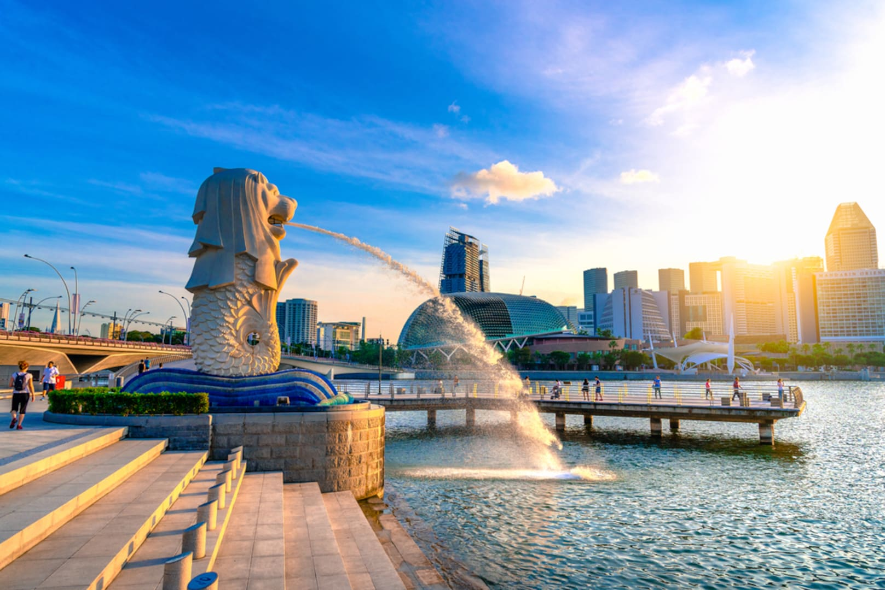
Merlion Park
One Fullerton, Singapore
Merlion Park
Merlion park merupakan patung yang memiliki kepala singa berbadan ikan. Tempat wisata di Singapura ini sudah menjadi icon dari Negara Singapura dan sangat terkenal didunia. Taman wisata ini buka hingga 24 jam tiap harinya, dan memiliki alam yang terbuka alias tidak dipungut biaya. Sehingga bagi anda yang berkunjung, anda bisa sebebas mungkin untuk berfoto, berjalan-jalan, dan menikmati sungai serta keindahan dari taman merlion park tersebut. Tempat ini berlokasikan didepan Singapore River.
Location : One Fullerton, Singapore
Back
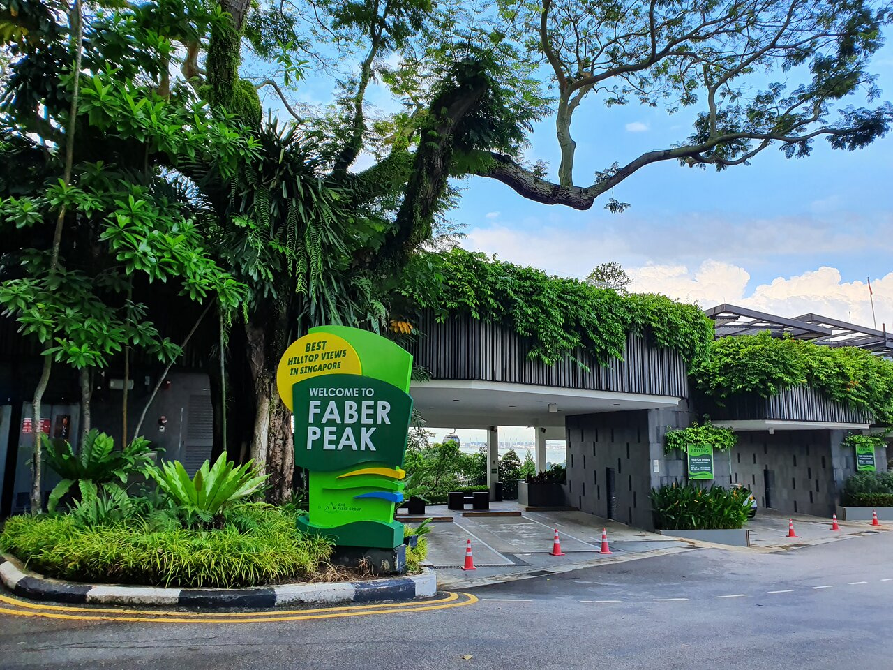
Gunung Faber
Gunung Faber, Singapore
Gunung Faber
Gunung Faber adalah sebuah bukit yang terletak di Wilayah Tengah Singapura, di dalam kota Bukit Merah. Gunung Faber tingginya sekitar 105 meter (344 kaki). Bukit hijau subur berdiri tinggi menghadap area Telok Blangah dan sisi Barat Area Tengah. Bukit itu sendiri sangat indah tetapi jika Anda mengunjungi Gunung Faber Anda juga harus menjelajahi tempat untuk dikunjungi di dekat Gunung Faber ke rencana perjalanan Anda.
Location : Gunung Faber, Singapore
Back
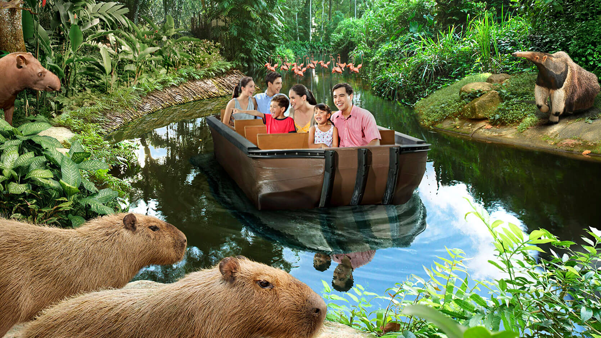
River Safari
80 Mandai Lake Rd, Singapore
River Safari
River Safari berada dalam satu area dengan Singapore Zoo dan Night Safari. Kekhasan kebun binatang ini adalah menampilkan binatang2 khas sungai, didalam kita bisa melihat akuarium raksasa, menaiki sampan, juga terdapat Panda dan Red Panda.
Location : 80 Mandai Lake Rd, Singapura 729826
Back
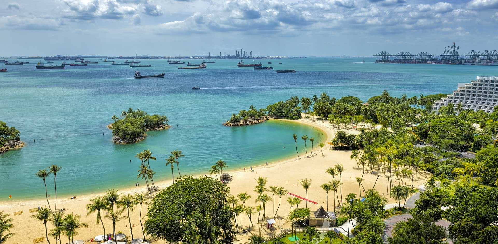
Sentosa Island
Pulau Sentosa, Singapore
Sentosa Island
Pulau Sentosa merupakan destinasi wisata yang sangat mudah dikunjungi dengan kereta monorail atau kereta kabel dari pusat kota Singapura. Pulau ini begitu populer di antara wisatawan, yang mencakup taman bermain Universal Studios Singapore dan S.E.A. Aquarium. Pesona utama pulau ini terletak pada sejumlah pantai berpasir putih di Siloso, Palawan, dan Tanjong. Anda dapat mengunjungi pulau-pulau ini, beserta destinasi wisata alam dan tempat bersejarah lainnya, dengan menaiki kereta, bis, dan trem yang tersedia secara gratis.
Location : Pulau Sentosa, Singapore
Back
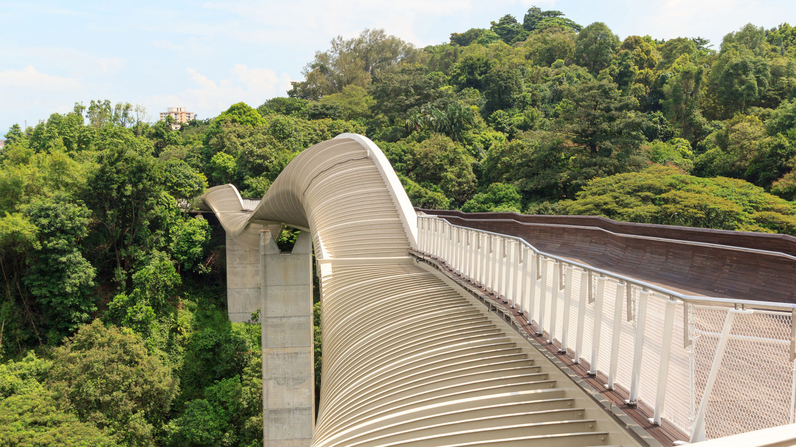
Southen Ridges
Kent Ridge Park, and Telok Blangah Hill Park, Singapore
Southen Ridges
Anda bisa menikmati jalur olahraga dan berjalan sepanjang 10 kilometer di Southern Ridges ini. Lokasinya tidak jauh dari Mount Faber tetapi memiliki pembangunan yang sudah lebih maju dan membuat wisatawan nyaman mengunjunginya. Anda juga bisa melewati jembatan penghubung antara Kent Ridge dengan HarbourFront di sini.
Location : Kent Ridge Park, and Telok Blangah Hill Park, Singapore
Back
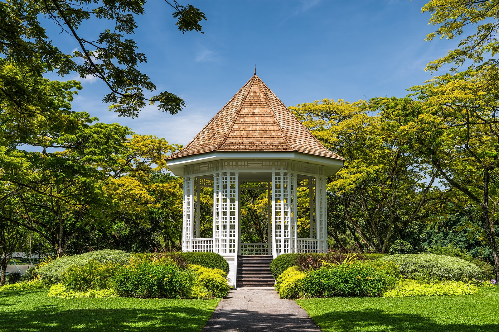
Taman Botani
1 Cluny Rd, Singapore
Taman Botani
Taman tropis subur di jantung kota ini tidak diragukan lagi merupakan salah satu taman nasional paling populer di Singapura, dan satu-satunya yang mendapatkan status situs warisan dunia UNESCO. Sempurna untuk berjalan-jalan santai, piknik keluarga, serta jalan-jalan alami yang menyegarkan, Singapore Botanic Gardens adalah tempat yang wajib dikunjungi. Bersiaplah untuk terpesona oleh pemandangan menyapu, danau yang indah dengan angsa dan Taman Anggrek yang menakjubkan saat Anda berjalan-jalan di sepanjang surga tanaman ini.
Location : 1 Cluny Rd, Singapura 259569
Back

Siloso Beach
Siloso Beach Walk, Singapore
Siloso Beach
Siloso adalah pantai kota yang populer di Singapura dengan infrastruktur yang berkembang dengan baik dan layanan yang hebat. Ada banyak kafe, restoran, diskotik, klub malam, dan atraksi di sini. Lapangan bola voli didirikan di pantai, dan resor ini populer di kalangan turis muda dan mereka yang menyukai liburan yang menyenangkan. Para atlet, penggemar jet ski, dan water ski pun senang mengunjungi tempat ini. Pengunjung dapat menyaksikan pertunjukan laser yang menakjubkan di malam hari.
Location : Siloso Beach Walk, Singapore
Back
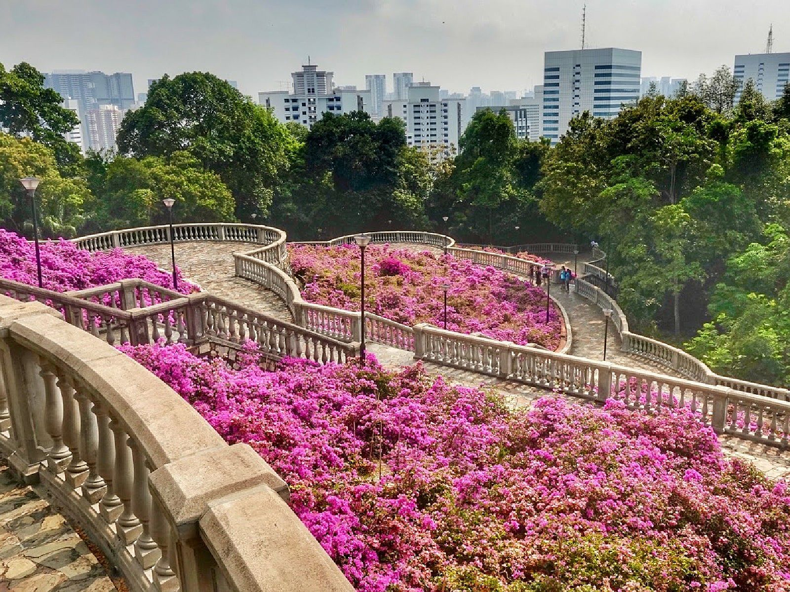
Telok Blangah
Bukit Merah, Singapore
Telok Blangah
Bukit yang memiliki jalur tracking di atas air adalah Telok Blangah Hill Park ini. Jika anda tertarik untuk mengunjunginya, maka anda bisa menikmati keindahan seluas 34 hektar ini di siang hari atau malam hari. Anda akan mengalami pandangan memukau setelah Anda berada di atas sana.Trekking di malam hari juga dapat menghadirkan pengalaman baru karena sejumlah jalur cukup terang dengan serangkaian LED yang benar-benar dapat membuat pengalaman Anda menyala.
Location : Bukit Merah, Singapore
Back
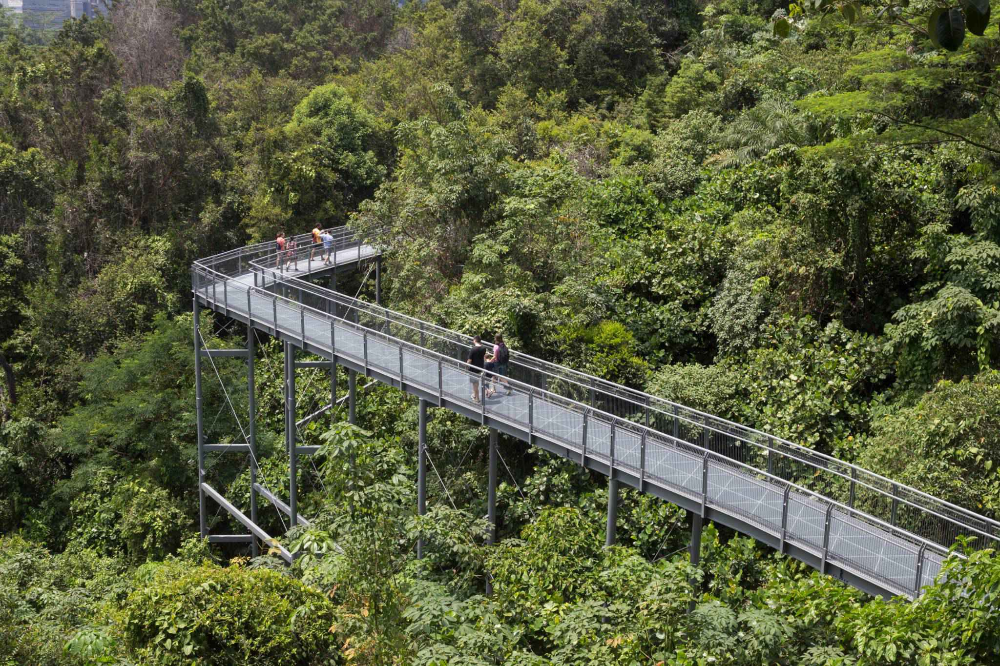
Kent Ridge Park
Kent Ridge, Singapore
Kent Ridge Park
Kent Ridge Park adalah taman umum seluas 47 hektar yang terletak di Kent Ridge, Singapura, antara National University of Singapore dan Singapore Science Park. Karena habitatnya yang tidak terganggu dan kehidupan tanaman yang melimpah, tempat ini menjadi tempat populer bagi para pengamat burung dan ekowisata.
Alamat : Kent Ridge, Singapore
Back